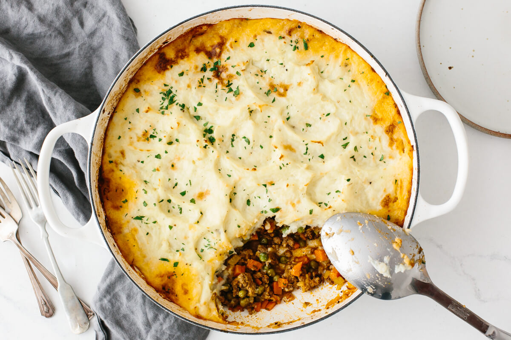

Shepherd's Pie

Description
Shepherd’s pie is a classic comfort food recipe that’s healthy, hearty and filling. The bottom layer is a simple a mix of ground lamb and vegetables, simmered into a delicious savory sauce. Then, it’s topped with fluffy and creamy mashed potatoes that form a golden crust. It’s an easy, cozy meal the whole family will love!
- 2 pounds russet potatoes, peeled and quarted
- 1/2 cup milk
- 1/4 cup butter
- salt and pepper, to taste
- 2 tablespoons avocado oil or olive oil
- 1 large onion, diced
- 3 garlic cloves, minced
- 2 large carrots, peeled and diced
- 2 celery stalk, diced
- 1 1/2 pounds ground lamb or ground beef
- 1 teaspoon salt
- 1/4 teaspoon pepper
- 1 cup chicken broth, or if usign ground beef use beef broth
- 1 1/2 tablespoons tomato paste
- 1 tablespoon Worcestershire sauce
- 2 teaspoons fresh rosemary, finely chopped
- 1 teaspoon fresh thyme, finely chopped
- 1 cup frozen peas
Steps
- Place the potatoes in a pot on the stove and cover with cold water. Turn the heat to high and bring to a boil. Cook for 13-15 minutes, or until the potatoes are soft when pierced with a fork.
- Drain the potatoes in a colander, then return to the pot. Add the milk, butter, salt and pepper and mash until creamy.
- Preheat your oven to 400 degrees fahrenheit (200 celsius).
- In a large oven-safe saute pan, heat the oil on medium heat. Add the onion and garlic and saute for a minute. Then add the diced carrots, diced celery, and lamb. Cook for 8-10 minutes or until the meat is browned. Use your spatula to break up the meat while cooking.
- Drain the fat from the pan and add the broth, tomato paste, Worcestershire sauce, rosemary, thyme, salt and pepper. Simmer for about 5 minutes, until the sauce is slightly thickened.
- Add the frozen peas and stir together. Turn off the stove and use the back of your spatula to flatten the meat mixture into a single layer.
- Dollop the mashed potatoes on top of the meat and use a spoon or spatula to spread it flat to the edges. If desired, create texture in the potato topping with a spoon or fork.
- Bake the Shepherd's pie until slightly golden, about 25-30 minutes. You can broil the top for 1-2 minutes as well.